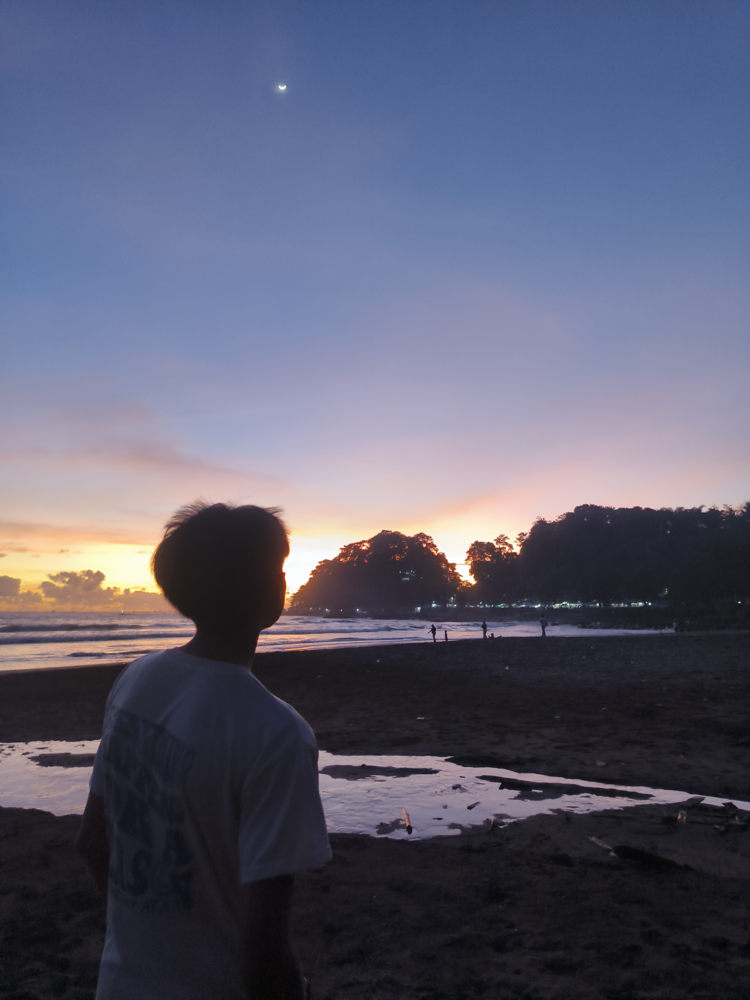

Fokus membangun solusi digital yang rapi, responsif, dan bermanfaat. Sedang aktif mempelajari teknologi web modern untuk meningkatkan efisiensi koding.

Saya adalah seorang penuntut ilmu yang percaya bahwa teknologi dapat memberikan solusi nyata untuk mempermudah kehidupan manusia. Sesuai dengan prinsip doa yang saya pegang: memohon agar ilmu yang dipelajari mendatangkan manfaat.
Saat ini saya menggunakan waktu luang saya untuk mengeksplorasi dunia pemrograman komputer, mengasah logika lewat koding, dan mengumpulkan portofolio proyek nyata di GitHub.
Punya project yang ingin dibuat atau butuh jasa pembuatan website? Hubungi saya sekarang.